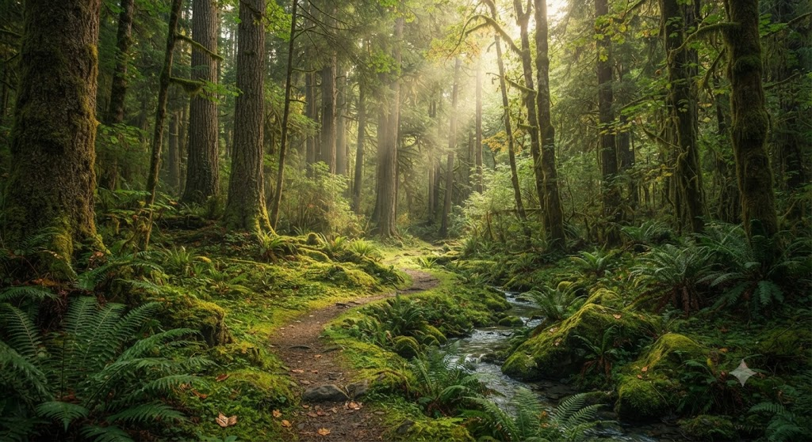
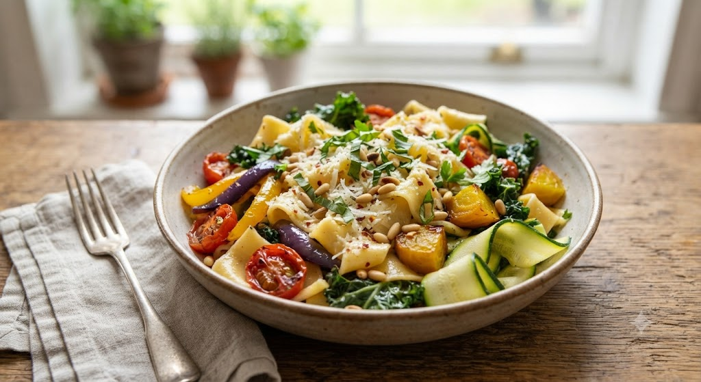
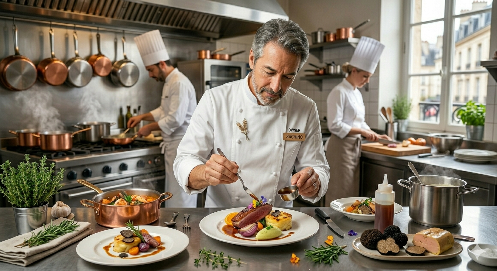

道産小麦100%にこだわった自家製の手打ちパスタは、噛むほどに小麦の甘みが広がります。ソースに使うのは、毎朝「フォルケッタ農園」で収穫される、生命力にあふれた無農薬野菜たち。
食材が持つ本来の「声」を聞き、余計な手を加えず、最大限の敬意を払って調理する。それが私たちの考える、最高の贅沢です。

野鳥のさえずりと、高い天井が織りなす静寂。
日常の喧騒を離れ、ただ食材と景色に向き合う贅沢なひととき。

Father's Legacy
私たちのルーツは、北海道大学農学部で無農薬栽培と地産地消を説いた、マダムの父の情熱にあります。
彼が主宰した「フォルケッタ農園」は、単なる畑ではありません。そこは、人間と自然が調和し、豊かな実りを分かち合う「スローフード」の実践地。その志を受け継ぎ、私たちはこの地に根を下ろしました。
「本当に良いものを、一番美味しい状態で。」
その教えは、今もキッチンの火の中に、そしてお皿を彩る野菜の一枚一枚に息づいています。
原生林に守られたレストランの窓からは、四季折々の絵画のような景色が。都会の時計とは違う、ゆったりとした時間が流れます。
前菜からドルチェまで、すべての皿にストーリーを。驚きと感動、そして安心感が共存する特別なディナーをお約束します。
公式サイト・お電話にてご予約をいただいた大切なお客様へ。
お客様のお名前を添えた、本日限定の「お名前入りお品書き」をご用意。特別な一日の思い出に。
季節の庭園を最も美しく眺められる、プライオリティ・シートへの優先案内（ご予約先着順）。
私たちの農園から、新しい体験をお届けします。
フォルケッタ農園の「その日一番美味しい野菜」を、ご自宅の食卓へお届けするサブスクリプションサービス。
特別な記念日に、レストランを一日一組限定で貸切。シェフが直接テーブルで仕上げるフルコース体験。
RESERVATION
ランチ・ディナーともに、お席の数に限りがございます。
原生林の静寂を守るため、事前のご予約をお願いしております。